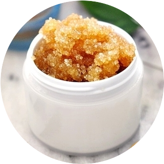

Скрабы
Отличие скраба от пилинга и его воздействие на кожу лица
Многие считают, что скраб и пилинг — это одна и та же процедура. На самом деле это два самостоятельных способа по уходу за кожей. Они одинаково воздействуют на кожу лица: осуществляют глубокую чистку, проникая во внутренние слои эпидермиса. Различаются тем, что первый имеет механическое действие, а второй — химическое. Если в качестве основы для скраба выступают твердые частицы (косточки абрикоса, кофейная гуща, соль), то пилинг готовится на основе фруктовых кислот (лимонный, яблочный, виноградный сок). В его составе тоже присутствуют абразивные частицы, но настолько мелкие, что не дают никакого отшелушивающего эффекта. Действие пилинга направлено на омоложение и уменьшение пигментации на лице. Но из-за того, что в его составе используются фруктовые кислоты, средство может вызвать аллергию и раздражение. Категорически не рекомендовано к использованию женщинам с чувствительной кожей лица. Остальным применять его достаточно одного раза в месяц, а скраб — 2-3 раза в неделю. Обе процедуры необходимо регулярно проводить, чтобы глубоко очистить кожу от черных точек и счистить шероховатости.
Противопоказания к использованию
По сравнению с другими очищающими средствами натуральный скраб дает потрясающий результат. Но абразивные частицы могут травмировать кожный покров. Прежде чем готовить скраб для лица дома, изучите все противопоказания. Тонкая и чувствительная кожа. Вам следует отдать предпочтение рецептам, обладающим щадящим очищающим действием. Простой состав из овсянки и кефира мягко воздействует, не раздражая верхний слой эпидермиса. Мягкий способ скрабирования всегда приятней для кожи лица чем жесткий. Купероз. Если на лице имеется просвечивающаяся капиллярная сеточка, лучше откажитесь от очищающих процедур. Воспаления и угри. Незажившие ранки и рубцы на лице — еще одна причина отказаться от использования скраба. Залечите прыщи и подождите, пока все открытые раны на лице заживут, и только потом проводите очищающие процедуры. Кожные заболевания. При дерматите противопоказано использование любых скрабов для лица. К числу таких заболеваний относятся акне, виталиго, розацеа, папилломы и другие. Чтобы применение скраба не привело к нежелательному результату, проведите тест на аллергическую реакцию. Сделайте это обязательно. Готовое средство нанесите на запястье и смойте не позднее, чем через 20 минут. Понаблюдайте за тестируемой областью в течение следующих 24 часов. Если за это время на ней появилось раздражение, откажитесь от использования средства. Проводите очищающие процедуры с применением скраба не чаще трех раз в неделю. Ежедневный уход с помощью скраба очень вредный. Если у вас сухая кожа лица, сократите частоту использования средства до одного. Согласно отзывам косметологов, злоупотребление скрабом может привести к истончению кожного покрова и преждевременному старению. Наносить нужно нежными движениями, чтобы не навредить коже.
Ингредиенты для приготовления
Кофе. Для скраба используется в молотом виде. Он может быть заменен оставшейся после приготовления напитка кофейной гущей. Продукт оказывает благоприятное действие на увядшую кожу: выравнивает цвет лица и возвращает ему здоровое сияние.
Яичная скорлупа. Натуральный источник кальция и гиалуроновой кислоты, необходимой для поддержания молодости кожи. Из яичной скорлупы можно приготовить эффективный скраб, который способствует устранению мелких морщин и пигментных пятен.
Кедровые и грецкие орехи. Оказывают сильное питательное действие, поэтому входят в состав скрабов для сухой кожи. Средство выравнивает цвет лица, избавляя от покраснений. Молотая скорлупа грецкого ореха оказывает щадящее очищающее действие.
Овсяные хлопья. Скраб с овсянкой особенно рекомендован для жирной кожи лица: он регулирует выделение подкожного жира и придает лицу матовость. Продукт оказывает благоприятное действие и на стареющую кожу лица: способствует восстановлению упругости и разглаживанию морщин.
Пищевая и морская соль. Пищевая — удаляет загрязнения, скапливающиеся в порах, предотвращает появление черных точек на лице. А морская — способствует выравниванию структуры кожи лица. Соль для скраба не должна быть крупной: она повредит кожный покров и вызовет покраснение. Для комбинированной кожи средство рекомендуется применять каждую неделю.
Сахар. Выступает в качестве ингредиента отшелушивающего скраба для лица в домашних условиях. Он возвращает коже мягкость и бархатистость за счет удаления омертвевших клеток. При постоянном использовании средства цвет лица становится равномерным, а кожа приобретает гладкость. Для домашнего скраба подходит коричневый и белый сахар, главное — он должен быть мелким. Соблюдение этого условия особенно важно для тех, кто обладает нежной кожей.
Сода. Широко используется в домашней косметике для жирной кожи. Сальный блеск, расширенные и загрязненные поры — все это устраняется регулярным использованием содового скраба. Своим очищающим эффектом продукт не уступает дорогостоящим косметическим средствам.
Косточки винограда. Используются в молотом виде и благоприятно действуют на стареющую кожу. В виноградных косточках содержится масло, оказывающее разглаживающее действие на верхний слой эпидермиса.
Сметана и йогурт. Делают действие скраба менее агрессивным и оставляют ощущение мягкости на лице после процедуры. Благодаря увлажняющему свойству продуктов применять средство можно чаще обычного.
Фруктовое пюре. Содержит большое количество витаминов и минералов, которые благоприятно влияют на кожу лица. Чаще всего используется банановое или яблочное пюре.
Гель для умывания. Делает чистящее средство слишком мылким, отчего эффект от его применения сводится к минимуму. Скраб на основе геля для умывания похож на «покупной», но на этом его плюсы заканчиваются.
Оливковое масло. Нормализует уровень увлажненности и дарит мягкость. Скраб на масленой основе понравится женщинам с нежной кожей лица.